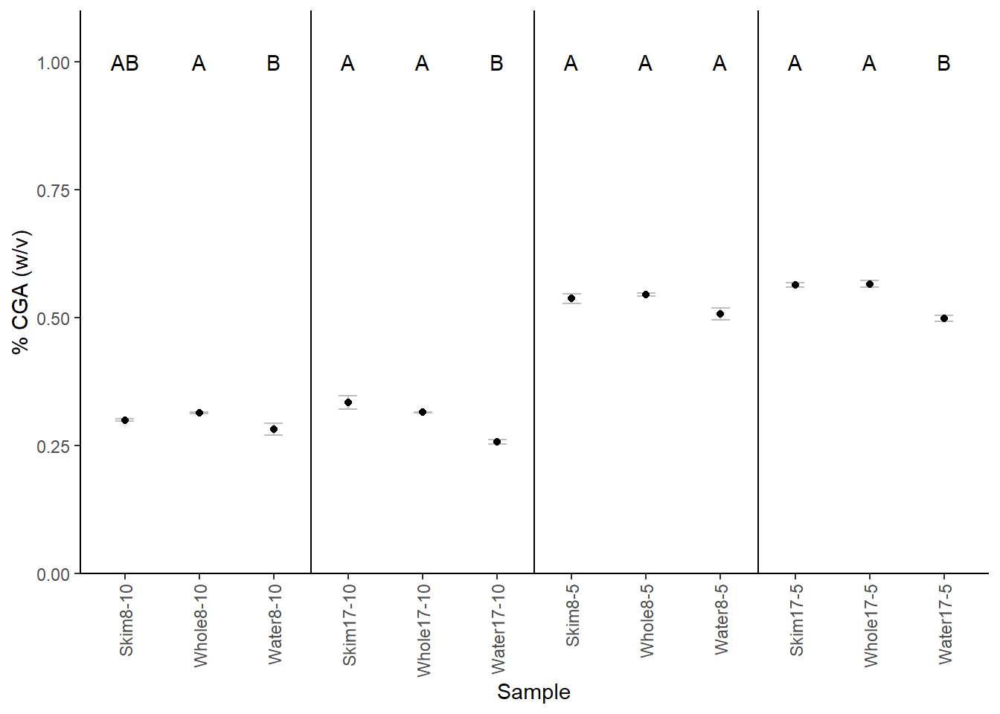
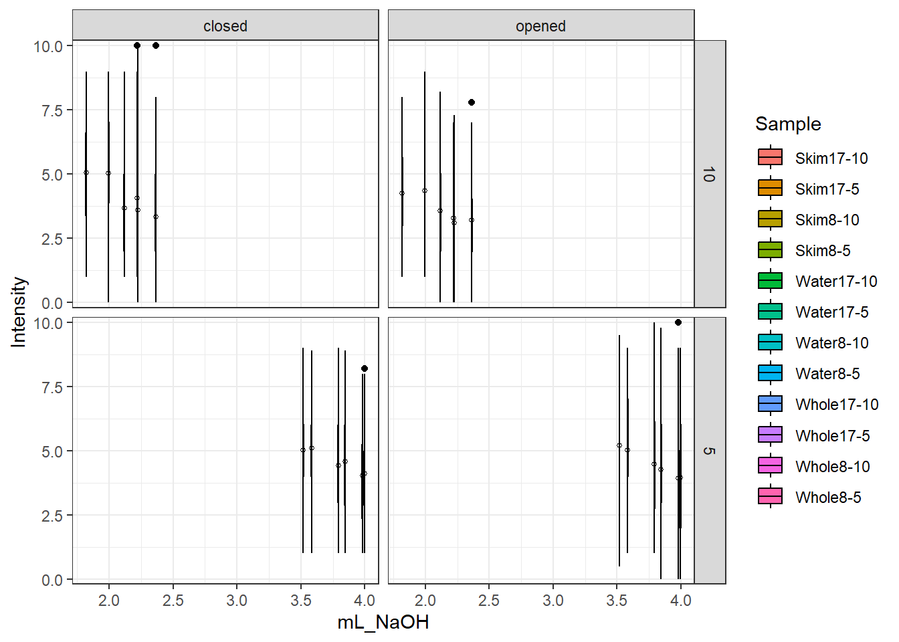

Chapter 6 Titratable Acidity, pH, and Sourness
6.1 Titratable Acidity
Df Sum Sq Mean Sq F value Pr(>F)
Sample 2 0.07614 0.03807 5.026 0.081 .
Rep 2 0.01395 0.00697 0.921 0.469
Residuals 4 0.03030 0.00757
---
Signif. codes: 0 '***' 0.001 '**' 0.01 '*' 0.05 '.' 0.1 ' ' 1 mL_NaOH groups
Whole8-10 2.219433 a
Skim8-10 2.118067 ab
Water8-10 1.994500 b Df Sum Sq Mean Sq F value Pr(>F)
Sample 2 0.4796 0.23981 28.044 0.00443 **
Rep 2 0.0194 0.00970 1.134 0.40729
Residuals 4 0.0342 0.00855
---
Signif. codes: 0 '***' 0.001 '**' 0.01 '*' 0.05 '.' 0.1 ' ' 1 mL_NaOH groups
Skim17-10 2.363733 a
Whole17-10 2.224067 a
Water17-10 1.819367 b# water significantly less acidic than milk additions
aov5.8 <- aov(mL_NaOH ~ Sample + Rep, data = TA5.8)
summary(aov5.8) Df Sum Sq Mean Sq F value Pr(>F)
Sample 2 0.11571 0.05786 3.869 0.116
Rep 2 0.01323 0.00662 0.442 0.671
Residuals 4 0.05981 0.01495 mL_NaOH groups
Whole8-5 3.845333 a
Skim8-5 3.793267 a
Water8-5 3.583033 a Df Sum Sq Mean Sq F value Pr(>F)
Sample 2 0.4423 0.22113 36.931 0.00264 **
Rep 2 0.0019 0.00097 0.163 0.85519
Residuals 4 0.0240 0.00599
---
Signif. codes: 0 '***' 0.001 '**' 0.01 '*' 0.05 '.' 0.1 ' ' 1 mL_NaOH groups
Whole17-5 3.996000 a
Skim17-5 3.980867 a
Water17-5 3.518367 b- AOV model includes Sample and Rep main effects on mL NaOH readings
- no rep effects seen in anovas (p > 0.05)
- at 1:10 and 8% addition, water was significantly different from whole milk addition
- at 17% addition (both 1:10 and 1:5), water was significantly different from either milk addition
coffeelevels <- c("Water", "Skim", "Whole",
"Black5", "Black10",
"Skim17-5", "Whole17-5", "Water17-5",
"Skim8-5", "Whole8-5","Water8-5",
"Skim17-10", "Whole17-10", "Water17-10",
"Skim8-10", "Whole8-10", "Water8-10")
TASummary <- summarySE(data = TAReadings, measurevar = "mL_NaOH", groupvars = "Sample") %>% select(Sample, mL_NaOH, sd) %>% arrange(factor(Sample, levels = coffeelevels)) %>% slice(-(1:5))
TASummary$groups <- c("A", "A", "B", "A", "A", "A",
"A", "A", "B", "AB", "A", "B")
coffeeorder <- c("Skim8-10", "Whole8-10", "Water8-10",
"Skim17-10", "Whole17-10", "Water17-10",
"Skim8-5", "Whole8-5","Water8-5",
"Skim17-5", "Whole17-5", "Water17-5")
TASummary$Sample <- factor(TASummary$Sample, levels = coffeeorder)Figure 6.1: Titratable acidity (mean +/- standard deviation) of cold brew coffee samples with either skim milk, whole milk, or water added. For example, Skim8-10 has 8% skim milk added to a cold brew coffee at a 1:10 brew strength. Samples within a section that do not share a letter are significantly different as determined by a 2-way ANOVA (sample and rep) and LSD post-hoc test.
6.2 TA Percent Acid
\[ \%\ acid\ (w/v) = \frac{N \cdot V_1 \cdot Eq wt}{V_2 \cdot 1000} \cdot 100 \]
where
N = normality of titrant
\(V_1\) = volume of titrant
Eqwt = equivalent weight of relevant acid
Eqwt CGA = 354.31
\(V_2\) = volume of solution
AOV model includes Sample and Rep main effects on percent CGA calculations
- no rep effects seen in anovas (p > 0.05)
- at 1:10 and 8% addition, water was significantly different from whole milk addition
- at 17% addition (both 1:10 and 1:5), water was significantly different from either milk addition
## Sample mL_NaOH sd groups
## 1 Skim17-5 3.980867 0.046687721 A
## 2 Whole17-5 3.996000 0.073982971 A
## 3 Water17-5 3.518367 0.072777904 B
## 4 Skim8-5 3.793267 0.120494039 A
## 5 Whole8-5 3.845333 0.034670785 A
## 6 Water8-5 3.583033 0.144231666 A
## 7 Skim17-10 2.363733 0.156855804 A
## 8 Whole17-10 2.224067 0.005644762 A
## 9 Water17-10 1.819367 0.046502294 B
## 10 Skim8-10 2.118067 0.022627491 AB
## 11 Whole8-10 2.219433 0.017810484 A
## 12 Water8-10 1.994500 0.145922274 B
Figure 6.2: Percent chlorogenic acid (CGA) (mean +/- standard deviation) of cold brew coffee samples with either skim milk, whole milk, or water added. For example, Skim8-10 has 8% skim milk added to a cold brew coffee at a 1:10 brew strength. Samples within a section that do not share a letter are significantly different as determined by a 2-way ANOVA (sample and rep) and LSD post-hoc test.
6.3 Correlation with Sour Ratings
6.3.1 TA Readings + Sourness
## [1] "sourness_13" "sourness_15" "sourness_14" "sourness_17" "sourness_16"
## [6] "sourness_18" "sourness_19" "sourness_21" "sourness_20" "sourness_23"
## [11] "sourness_22" "sourness_24"brew10closedsour_ratings_long <- brew10closedsour_ratings_long %>%
mutate(Sample = recode(Sample, "sourness_13" = "Skim17-10")) %>%
mutate(Sample = recode(Sample, "sourness_14" = "Skim17-10")) %>%
mutate(Sample = recode(Sample, "sourness_15" = "Whole17-10")) %>%
mutate(Sample = recode(Sample, "sourness_16" = "Whole17-10")) %>%
mutate(Sample = recode(Sample, "sourness_17" = "Water17-10")) %>%
mutate(Sample = recode(Sample, "sourness_18" = "Water17-10")) %>%
mutate(Sample = recode(Sample, "sourness_19" = "Skim8-10")) %>%
mutate(Sample = recode(Sample, "sourness_20" = "Skim8-10")) %>%
mutate(Sample = recode(Sample, "sourness_21" = "Whole8-10")) %>%
mutate(Sample = recode(Sample, "sourness_22" = "Whole8-10")) %>%
mutate(Sample = recode(Sample, "sourness_23" = "Water8-10")) %>%
mutate(Sample = recode(Sample, "sourness_24" = "Water8-10"))
unique(df10openedSour_ratings_long$Sample)## [1] "sourness_13" "sourness_15" "sourness_14" "sourness_17" "sourness_16"
## [6] "sourness_18" "sourness_19" "sourness_21" "sourness_20" "sourness_23"
## [11] "sourness_22" "sourness_24"df10openedSour_ratings_long <- df10openedSour_ratings_long %>%
mutate(Sample = recode(Sample, "sourness_13" = "Skim17-10")) %>%
mutate(Sample = recode(Sample, "sourness_14" = "Skim17-10")) %>%
mutate(Sample = recode(Sample, "sourness_15" = "Whole17-10")) %>%
mutate(Sample = recode(Sample, "sourness_16" = "Whole17-10")) %>%
mutate(Sample = recode(Sample, "sourness_17" = "Water17-10")) %>%
mutate(Sample = recode(Sample, "sourness_18" = "Water17-10")) %>%
mutate(Sample = recode(Sample, "sourness_19" = "Skim8-10")) %>%
mutate(Sample = recode(Sample, "sourness_20" = "Skim8-10")) %>%
mutate(Sample = recode(Sample, "sourness_21" = "Whole8-10")) %>%
mutate(Sample = recode(Sample, "sourness_22" = "Whole8-10")) %>%
mutate(Sample = recode(Sample, "sourness_23" = "Water8-10")) %>%
mutate(Sample = recode(Sample, "sourness_24" = "Water8-10"))
unique(brew5closedsour_ratings_long$Sample)## [1] "sourness_1" "sourness_3" "sourness_2" "sourness_5" "sourness_4"
## [6] "sourness_6" "sourness_7" "sourness_9" "sourness_8" "sourness_11"
## [11] "sourness_10" "sourness_12"brew5closedsour_ratings_long <- brew5closedsour_ratings_long %>%
mutate(Sample = recode(Sample, "sourness_1" = "Skim17-5")) %>%
mutate(Sample = recode(Sample, "sourness_2" = "Skim17-5")) %>%
mutate(Sample = recode(Sample, "sourness_3" = "Whole17-5")) %>%
mutate(Sample = recode(Sample, "sourness_4" = "Whole17-5")) %>%
mutate(Sample = recode(Sample, "sourness_5" = "Water17-5")) %>%
mutate(Sample = recode(Sample, "sourness_6" = "Water17-5")) %>%
mutate(Sample = recode(Sample, "sourness_7" = "Skim8-5")) %>%
mutate(Sample = recode(Sample, "sourness_8" = "Skim8-5")) %>%
mutate(Sample = recode(Sample, "sourness_9" = "Whole8-5")) %>%
mutate(Sample = recode(Sample, "sourness_10" = "Whole8-5")) %>%
mutate(Sample = recode(Sample, "sourness_11" = "Water8-5")) %>%
mutate(Sample = recode(Sample, "sourness_12" = "Water8-5"))
unique(df5openedSour_ratings_long$Sample)## [1] "sourness_1" "sourness_3" "sourness_2" "sourness_5" "sourness_4"
## [6] "sourness_6" "sourness_7" "sourness_9" "sourness_8" "sourness_11"
## [11] "sourness_10" "sourness_12"df5openedSour_ratings_long <- df5openedSour_ratings_long %>%
mutate(Sample = recode(Sample, "sourness_1" = "Skim17-5")) %>%
mutate(Sample = recode(Sample, "sourness_2" = "Skim17-5")) %>%
mutate(Sample = recode(Sample, "sourness_3" = "Whole17-5")) %>%
mutate(Sample = recode(Sample, "sourness_4" = "Whole17-5")) %>%
mutate(Sample = recode(Sample, "sourness_5" = "Water17-5")) %>%
mutate(Sample = recode(Sample, "sourness_6" = "Water17-5")) %>%
mutate(Sample = recode(Sample, "sourness_7" = "Skim8-5")) %>%
mutate(Sample = recode(Sample, "sourness_8" = "Skim8-5")) %>%
mutate(Sample = recode(Sample, "sourness_9" = "Whole8-5")) %>%
mutate(Sample = recode(Sample, "sourness_10" = "Whole8-5")) %>%
mutate(Sample = recode(Sample, "sourness_11" = "Water8-5")) %>%
mutate(Sample = recode(Sample, "sourness_12" = "Water8-5"))
colnames(df5openedSour_ratings_long)## [1] "participant" "Sample" "Intensity" "coffee" "cond"brew10sour <- full_join(brew10closedsour_ratings_long, df10openedSour_ratings_long, by = c("participant", "Sample", "Intensity", "coffee", "cond"))
brew5sour <- full_join(brew5closedsour_ratings_long, df5openedSour_ratings_long, by = c("participant", "Sample", "Intensity", "coffee", "cond"))
sourDF <- full_join(brew10sour, brew5sour)## Joining with `by = join_by(participant, Sample, Intensity, coffee, cond)`## Joining with `by = join_by(Sample)`sourTAjoined %>% drop_na() %>%
ggplot(aes(x = mL_NaOH, y = Intensity)) +
facet_grid(coffee~cond) +
geom_boxplot(aes(fill = Sample), color = "black") +
stat_summary(fun = mean, geom = "point", shape = 21, size = 1) +
theme_bw() +
scale_y_continuous(expand = c(0,.2))